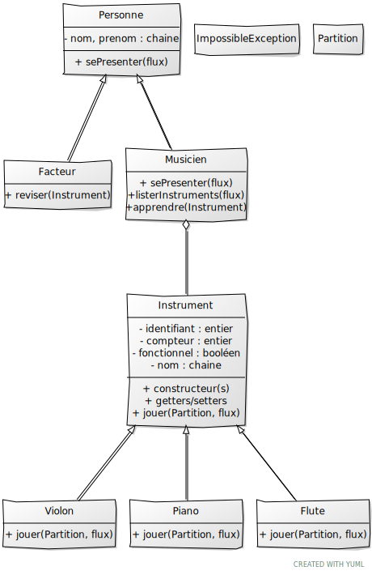

Voici votre examen de C++ ZZ2. Lisez tout le sujet avant de commencer : un certain nombre de tests ont été écrits pour être indépendants ou avec peu d'influence sur les autres.
À la fin de l'examen, vous devez transmettre le source/répertoire d'un programme qui compile. Une icône se trouve sur le bureau "Post Exam".
Pour plus de simplicité, vous DEVEZ utiliser trois fichiers en plus de main.cpp : tests.cpp, musique.hpp et musique.cpp. Ne changez pas la casse et n'ajoutez pas de fichiers, cela casserait la chaine de compilation et engendrerait une note nulle.
Toutes les déclarations seront dans l'entête, les définitions/implémentations seront dans le cpp.
La ligne de compilation est la suivante :
make
Si besoin, vous pouvez faire un make clean. La première compilation de la bibliothèque Catch est un peu longue, comme d'habitude
Ne jamais recommenter un test qui a réussi. Tous les tests décommentés doivent compiler dans le même temps (sauf mention contraire).
Pour garder une trace exécutable de votre programme sans stress supplémentaire :
Vous allez plus ou moins implémenter le diagramme UML ci-dessous. Toute ressemblance avec un autre examen serait purement fortuite.
On commence par la classe Personne.
nom et un prenom. [Personne1] [Personne2]sePresenter() qui permet d'envoyer un affichage lisible sur le flux donné en paramètre. [Personne3]Le programme utilise une exception ImpossibleException qu'il est nécessaire de créer [Impossible1]
Le programme utilise une classe Partition à définir mais qui est une classe vide.
On s'intéresse ensuite aux classes Instrument, Flute, Piano et Violon. (les trois dernières classes ne sont pas développées dans le cadre de cet examen)
Instrument dispose d'un compteur qui est incrémenté à chaque instanciation d'un instrument [Instrument1]Instrument est abstraite [Instrument2]On s'intéresse ensuite au facteur d'instrument qui est l'expert capable de créer/réviser/réparer un instrument.
Un musicien joue d'un ou plusieurs instruments (on ne prend pas en compte le cas où il ne connait pas d'instrument :-))
Il n'y a pas de fuite mémoire à votre programme !
Préparation du compte (1 fois, au début) :
git config --global user.name "un_nom"
git config --global user.email "un_mail"
Préparation du répertoire :
git init
À chaque nouveau fichier:
git add fichier
git add *
Sauvegarder / Committer :
git commit -am "commentaire"
git log permet d'avoir la liste des sauvegardes avec un numéro de hachage
Pour revenir en arrière :
git checkout numero_de_hash
OU git revert numero_de_hash